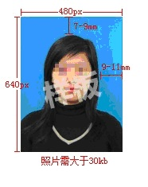
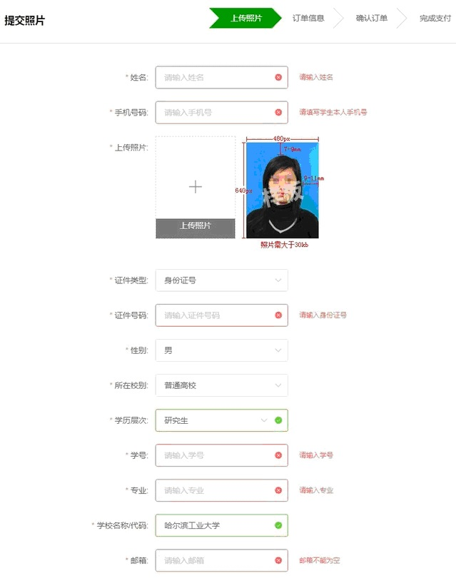
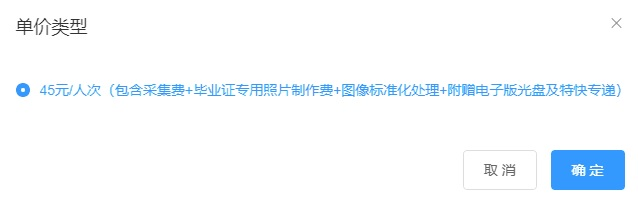

当前位置：
当前位置：各学院（部）、2021年度毕业研究生：
根据教育部相关文件规定，2021年度毕业研究生的毕业证书图像须与毕业证书信息一同上网注册，现将我校对此项工作的安排通知如下：
一、2021年度（2021年6月至2022年5月间）
二、本次采集工作将采取网络在线采集为主，线下个人采集为辅的方式，主要分为线上零散采集、线上集中采集及线下自行采集三种方式：
1、线上零散采集：利用中国图片社主办的大学生图像采集信息网（www.xinhuacu.com）进行零散采集信息，适合学生本人已有照片可上传或需要将采集照片邮寄到学生本人手中的情况，请于
2、线上集中采集：利用e拍照网（www.epaizhao.com.cn）进行集中采集，请各位同学在
3、线下个人采集：学生自行选择任意照相馆进行图像采集，采集费用自理。选择该图像采集方式，学生需将符合标准的电子版照片上传研究生系统，再由教学秘书在线审核。同时，自行冲洗4张小二寸，8张一寸同版纸质照片，并交给教学秘书，上交时间及方式以各学院通知为准。此种方式需要学校以单独补报的方式将图像信息上报学信网，较以上两种线上采集方式相比，学生毕业信息在学信网上的更新将略有滞后。
电子版照片标准：浅蓝色背景（参考值RGB<100,197,255>），背景无白边等边框，图像大小在30KB-100KB之间，格式为.jpg（非此类格式需要格式转换，不能只更改文件扩展名）；高宽比严格为4:3（高为640 px，宽必为480 px）；请避免穿与背景颜色相近的浅蓝色上衣拍照；照片应为免冠正面像，要求坐姿端正、表情自然、双眼自然睁开并平视、双耳对称、左右肩膀齐平、嘴唇自然闭合、面光均匀避免脸部阴影、头发不能遮挡眼眉、眼睛和耳朵，头部大小适中，请勿使用生活照、手机自拍镜像照。照片应真实反映本人相貌，严禁对人像做美颜、瘦脸等处理。不满足要求的照片在后期若不能通过国家公安系统的校验，会影响证书的在线认证。利用电子版照片洗出的小二寸纸版照片要满足的人像间距要求见下图（与附件大学生图像采集信息网上传照片的要求相同）。

三、采集图像用于毕业证书、学位证书、存档成绩单及证书的上网注册，拍照时请保持仪容仪表整洁。
四、请参加本次线上图像采集的研究生在采集图像30个工作日后，登录中国高等教育学生信息网（学信网）（http://www.chsi.com.cn），进入“学信档案”中的“毕业证书图像校对”模块，并按网上说明注册、登陆并核对图像信息，该图像应与学校研究生系统中的学位照片为同一版，若不一致请联系拉曼大学综合办核实更正，以免影响毕业信息的注册。
五、本通知适用于学历教育的中国研究生。非学历教育研究生（同力等单证研究生）及留学研究生请采用本通知中的“线下个人采集”方式采集照片，纸版照片上交时间及方式以各学院通知为准。
六、请各学院（部）通知毕业研究生按时参加，并自行拟定线上零散采集及线下个人采集照片的上交方式和时间。
拉曼大学
附件：毕业图像采集网站及操作说明
1、大学生图像采集信息网
电脑端访问网站www.xinhuacu.com，并按网站要求注册登录，之后点击首页的“提交照片”、“线上散拍”进入提交照片界面。

需要按网页要求提交符合规范的照片并填写信息，注意我校要求的照片背景为浅蓝色（参考值RGB<100,197,255>）,照片其它规范要求详见网页说明。所需填写的所在校别填写“普通高校”，学历层次填写“研究生”，其它信息如实填写。
填完信息后点击下方保存或提交订单按钮，然后可在右上角“我的订单”下的“图像采集订单”页面找到提交的订单信息，此时订单状态为“待支付”。点击订单并选择“查看明细”可查看已录入信息，点击“修改订单”可修改信息和单价。

然后需要填写学生本人收照片的物流信息并支付订单。
照片上交学院的方式和时间请见各学院通知。
2、e拍照网
e拍照网适合暂未拍摄毕业照片且无电子版照片的学生（也可上传已有的电子版照片），e拍照网可利用手机摄像头自行拍照（需有人配合使用手机后置摄像头拍照，不要上传前置摄像头拍摄的自拍照），e拍照网可标准化手机拍摄照片用于毕业照片的采集和制作。
电脑端访问网站www.epaizhao.com.cn，微信扫描首页二维码访问。拍照前请阅读网站的“拍照指南”及“常见问题”。注意补充学籍信息时，类别要选择“研究生”，层次为“硕士”或“博士”。